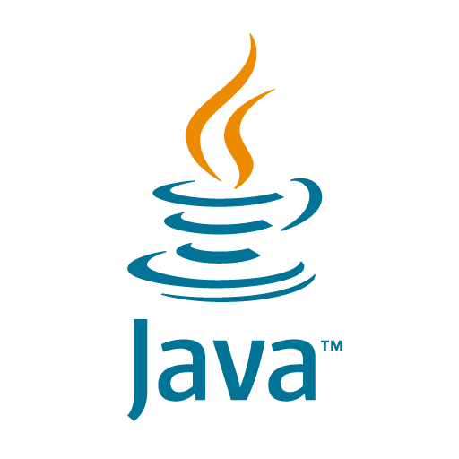

HTML
Semântica & acessibilidade
Full-stack developer · Brasil
Transformo código em experiências digitais que se movem, respiram e deixam marca.
Explorar↓
Sou Gustavo, desenvolvedor e Cientista da Computação. Gosto de transformar ideias em produtos rápidos, intuitivos e com personalidade — do primeiro pixel à última regra de negócio.
Este portfólio é meu laboratório: um espaço vivo para experimentar interfaces, animações e novas formas de criar na web.
Uma stack em constante evolução para construir produtos sólidos, rápidos e memoráveis.
Semântica & acessibilidade
Motion & interfaces
Interações & lógica
Automação & back-end

Back-end & arquitetura
Curiosidade não tem versão final.
DA PRIMEIRA OPORTUNIDADE
À CONSTRUÇÃO DE ALGO MEU.
Cada etapa aumentou o tamanho dos problemas que eu consigo resolver — e o impacto que consigo colocar no mundo.
O momento em que teoria e prática se encontraram. Aprendi a trabalhar em equipe, lidar com demandas reais e transformar curiosidade em entrega.
A faculdade aprofundou minha base em lógica, arquitetura e desenvolvimento — enquanto os projetos pessoais mantiveram o aprendizado em movimento.
Sites, sistemas e experiências digitais deixaram de ser apenas estudos. Passei a construir para negócios, marcas e comunidades com necessidades concretas.
Hoje estou à frente da Titanium, reunindo tecnologia, design e direção para transformar conhecimento em soluções que ganham vida no mundo.
Conhecer a Titanium ↗Tem uma ideia?


.jpg)